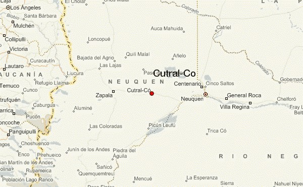

es una ciudad y municipio de la provincia del Neuquén, en Argentina. Se encuentra ubicada a la vera de la ruta nacional 22, a 109 km de la ciudad de Neuquén. Junto a la localidad de Plaza Huincul forma un único aglomerado urbano, el cual se denomina Cutral Co-Plaza Huincul.
La laguna Colorada era el único lugar con una fuente natural de agua, con ciertas condiciones de potabilidad, ubicada a 9 km de Campamento Uno y a unos 11 y 13 respectivamente de las actuales Plaza Huincul y Cutral Co. Este lugar es importante por el hecho de ofrecer agua núcleo a los trabajadores de las primeras compañías petroleras asentadas en el lugar, como YPF, Standard Oil, Sol y Astra. Este asentamiento poblacional fue conformado por los trabajadores y sus familias, quienes vivían en forma muy precaria fuera de los límites del octógono fiscal, hacia el oeste. También en el este del octógono fiscal, sobre las bardas y alrededores de la laguna Colorada, los primeros pobladores hicieron sus primeras casas de barro, adobe, e incluso cuevas en las bardas, donde vivieron hasta poder hacer sus precarias casas. La laguna, por ser plana, también permitía que aviones se asentaran en el lugar, y por eso el primer aeropuerto de la zona estuvo en ese lugar, en una parte de la laguna que estaba seca. Aun se conservan restos de esas primitivas y precarias casas o restos de cerámica de los primeros pobladores de la zona, y quedan los restos destruidos del primer aeropuerto local. También hubo un pequeño grupo de personas que se asentó en la zona de la aguada de la laguna Pasto Verde y al oeste de ese lugar comenzó a formase el poblado de Plaza Huincul, que en principio distaba de Cutral Co unos 9 km, pero al ir creciendo las ciudades terminaron juntas como se presentan en la actualidad. “Barrio Peligroso” comienza a ser una realidad en este contexto. Primeramente había recibido el nombre de Barrio Peligroso, pero luego se le fue cambiando de nombres hasta llegar a llamarse Cutral Co.
En 1928, el Dr. Zani se encuentra dirigiendo el Hospital de YPF en Plaza Huincul. En ocasión de concurrir a “Barrio Peligroso” a atender a un enfermo, siendo el único médico de la zona, y al comprobar la precariedad en la que vivían esos pobladores, sin servicios ni viviendas dignas, comenzó a pensar en la necesidad de hacer algo por ellos, para que pudieran vivir en mejores condiciones y lograr la urbanización del lugar. Así fue que junto a su gran amigo Miguel Benassar, juez de paz de Plaza Huincul, y al agrimensor Luis Baka, Jefe de Estudios y Proyectos de YPF, acompañados por un peón, se reunieron en el límite del Octógono, sobre un mojón de YPF, y comenzaron las tareas de trazado del pueblo, y posteriormente, el reparto de los lotes a los pobladores. En ese momento, gobernaba el Territorio Nacional del Neuquén el coronel Carlos H. Rodríguez y era presidente de la República el general Agustín P. Justo. El coronel Rodríguez, interpretando los planteos del Dr. Zani y de los vecinos de Barrio Peligroso, designó una comisión de Superintendencia, integrada por el propio Dr. Zani, Miguel Benassar, Luis Guidobono (subcomisario de Challacó) y Luis Baka. Fue esta comisión la que consiguió incorporar el pueblo a la geografía del Territorio Nacional del Neuquén. Esto sucedió el 22 de octubre de 1933, fecha oficial de fundación del pueblo, el cual fue cambiado al 10 de diciembre de 1935, cuando se impuso el nombre de “Cutral Co” por Decreto Nacional.
A pesar de las carencias existentes en la zona, siguieron llegando nuevos pobladores, muchos de ellos comerciantes de Zapala, que venían buscando mejorar su situación económica, afectada por la crisis del 30. Esto facilitó a los obreros de YPF y de las otras empresas petroleras adquirir todo tipo de elementos, lo cual era imposible hasta el momento. Entre los nuevos pobladores y primeros comerciantes se encontraban: José Montecino, carnicería desde 1929; Naum y Manuel Finkestein, tienda “La mano colorada”; Contreras y Nolasco, panadería, carnicería y sodería; Roberto Robles Bentham, “Farmacia Robles”; Abraham Sandler, almacén de ramos generales “El águila cordillerana”; Gutiérrez y Muñoz, panadería “El sol”; Miguel Majluf, almacén “El libanés”; Félix Rosel Per, cine “Astral”; entre varios otros. Fundado el pueblo, sus pobladores se encontraron frente a innumerables problemas sociales que requerían pronta solución. Para esto se formó, a comienzos de 1935, la “Comisión Vecinal Pro Obras Públicas de Pueblo Nuevo”, integrada por comerciantes y obreros. Unos meses después, esta comisión fue reemplazada por una nueva, integrada mayoritariamente por comerciantes y presidida por Elías Sapag. Esta nueva comisión avanzó con la rápida resolución de los problemas más urgentes, solventando sus gastos con contribuciones voluntarias de los pobladores. Las elecciones del 11 de noviembre de 1951 constituyen un hecho de gran trascendencia para la población, ya que por primera vez los habitantes concurrieron a las urnas. De estas elecciones surgió el primer Concejo Municipal, integrado por Andrés Álvarez, Felipe Sapag, Gilberto Pérez y Félix Rosel Per, por la mayoría peronista, y Polidoro Hernández por la minoría radical. A partir de ese momento los integrantes del concejo se dedicaron a obtener, mediante la recaudación impositiva, los recursos necesarios para dar solución a las necesidades del pueblo, ya que no recibían aportes del Gobierno Nacional. Gran parte de los primeros presupuestos municipales estuvo destinada a la concreción de obras públicas, tales como agua corriente, luz eléctrica, mantenimiento de calles y gas.
Hacia fines de los años 90, los piqueteros, por entonces “fogoneros”, y sus cortes de ruta comenzaron a hacerse habituales en los paisajes provinciales. En Semana Santa de 1997 la Gendarmería había desalojado a un grupo de docentes que protestaban sobre la Ruta 22, en Neuquén, porque el gobernador Felipe Sapag les había descontado del salario una bonificación de un 20 por ciento por zona desfavorable, además de otros beneficios. Cargaron contra maestros, políticos opositores y hasta contra el obispo Agustín Radrizzani. Se produjo un movimiento de apoyo en Cutral Co y Plaza Huincul, también con un corte de ruta. Al reclamo de los docentes se agregó el de la falta de trabajo. El 12 de abril de 1997 hubo represión y la gente salió a las calles. Como consecuencia, los gendarmes tuvieron que replegarse. Habían tratado de desalojar la Ruta 17 pero los manifestantes los cascoteaban desde las calles laterales, donde no podían intervenir. Alrededor de las 10 de la mañana entraron en acción unos 22 efectivos de la policía provincial, hubo enfrentamientos cuerpo a cuerpo y piedras contra balas. Alfredo Caso y Miguel Mont fueron dos de los trece heridos de la jornada. Un proyectil que rebotó en el piso hirió en el cuello a Teresa Rodríguez, una empleada doméstica de 24 años que murió poco después en el hospital de Cutral Co. Su nombre fue posteriormente utilizado para denominar a una importante organización social de Argentina, que además de conmemorar su muerte en el marco de una lucha social la rememora a través de las luchas y reclamos sociales.
Es una ciudad de la Patagonia enclavada en un territorio desértico, cuya importancia económica se basa en la industria petrolera, funcionando en ella empresas internacionales tales como YPF y Petrobrás, entre otras, que desarrollan todas las actividades en una gran área de influencia. Además de destilar los productos que se obtienen por la perforación de los pozos petrolíferos, se producen un sinnúmero de otras actividades laborales inherentes. Esto hace que la principal fuente de trabajo gire alrededor del petróleo. Muchas empresas chicas y medianas se encuentran asentadas en el lugar y prestan un sinnúmero de servicios a la actividad. La radicación de empresas de explotación petrolera y de servicios ligados a esa actividad originó un crecimiento relámpago de la ciudad. A principios de la década de 1990, el proceso de privatización de YPF trajo aparejado la emigración de la empresa, con lo que la economía local se vio afectada. Actualmente, ambas localidades entraron en un proceso de reconversión productiva, tendiente a poner en producción zonas aledañas, especialmente para actividad agrícola y vitivinícola. La actividad petrolera sigue siendo uno de los principales recursos de esta localidad. Importante de destacar el conflicto con la cerámica Stafani, emprendimiento familiar que entró en conflicto con sus obreros en 2010, dando como resultado despidos masivos y la toma de la fábrica por parte de los trabajadores, con el objetivo de expropiar la misma.
Actualmente se está realizando una obra para transportar agua desde el río Neuquén y desarrollar la agricultura en un área de aproximadamente 3000 hectáreas en las cercanías de la ciudad. Esto traería aparejado el empleo de mano de obra para una actividad diferente y muy necesaria en esa comarca.
El gobierno de la ciudad pretende que los aviones de Aerolíneas Argentinas vuelvan a aterrizar en el aeropuerto local, que funcionó desde mediados de los años 80 y hasta la mitad de los 90, con vuelos hacia Buenos Aires, Neuquén, Rincón de los Sauces, entre otras ciudades. Más allá de los pasajeros particulares, las empresas los utilizaban para el traslado de su personal. En 2018 la empresa LASA comenzó a operar desde la comarca petrolera hacia la capital a partir del primer lunes de noviembre. Hay dos frecuencias semanales que llegan a Aeroparque o Ezeiza.
Además, ya está en marcha el proyecto presentado ante las autoridades locales y representantes de diversas entidades intermedias de un parque recreativo para Cutral Co. El objetivo es generar un lugar que funcione como pulmón verde debido a que el ex campo de deportes que pertenecía a YPF y que cumplía esa función está cerrado desde hace años por un derrame de hidrocarburos.
Se pretende construir una fábrica de aerogeneradores de alta, mediana y pequeña intensidad, siendo esta la única en todo el territorio. El proyecto de instalar un polo tecnológico en Cutral Co se fundamente básicamente en la posibilidad de construir aerogeneradores de baja, media y alta potencia totalmente argentinos. En primer tramo de la fábrica de aerogeneradores sería la construcción de las torres "que tienen alturas superiores a los noventa metros, son más altas que el Obelisco, se hacen por tramos y requieren de una infraestructura que no está disponible todavía en el país y deben ser capaces de funcionar ante los grandes vientos de la Patagonia, que tienen la particularidad de que cambian constantemente de dirección y generan golpes de aire que rompen los molinos importados".
Por la ruta 22, se puede observar una réplica de la torre usada en uno de los yacimientos petrolíferos, como así también el cartel de bienvenida, la terminal de ómnibus, la destilería, la casa de la historia, el Museo municipal Carmen Funes, el aeropuerto, la arboleda, el Parque de la Ciudad, entre otros. En la ciudad de Cutral Co se encuentra el Monumento a la Memoria, en recuerdo de las personas detenidas y desaparecidas de Cutral Co y Plaza Huincul durante la última dictadura militar. En las cercanías de Plaza Huincul (unos 6 km al este) se encuentra el Pozo Termal "La Curva", cuyas aguas poseen propiedades terapéuticas para el tratamiento de afecciones reumáticas y dérmicas, estimulan las defensas del organismo, depuran la sangre y eliminan toxinas. En cuanto a espacios verdes, existe una variedad amplia de plazas y plazoletas; la principal es la Plaza General San Martín, ubicada en cercanías a la municipalidad de esta ciudad. Un lugar muy recurrido de esta localidad es la plazoleta que acompaña la dirección de toda la Av. Olascoaga y Av. Keidel. También a la vera de la ruta 22, casi frente a la terminal de ómnibus, hay un monumento de Cristo como en un abrazo permanente a estas dos comunidades. Creada por el artista local Aldo Beroisa, con un peso aproximado de 62 toneladas y 17 metros de alto, la misma se encuentra acompañada por un sendero peatonal para realizar caminatas con una extensión desde el límite mismo de la ciudad de Cutral Co y Plaza Huincul hasta el parque de la ciudad. El mismo está iluminado y cuenta con asaderas techadas y se trata de un monumento de mucho reconocimiento turístico. En su inauguración una vocera de eventos populares catalogó a esta obra del Cristo a la altura de las que posee el mismo Vaticano y la del Cristo Redentor de Brasil, basándose en las dimensiones semejantes.
Entre 1991 y 2001 hubo un estancamiento de la población, debido en gran medida a la crisis de la industria petrolera en la zona. En 2010 contaba con 36.162 habitantes, lo que representó un incremento de casi el 5 % respecto de los 33.995 registrados en el censo de 2001. La población estaba compuesta por 17.765 varones y 18.397 mujeres, con un índice de masculinidad de 96,56 %, mientras que la cantidad de viviendas aumentó de 9.246 a 11.220. Según el censo de 2022, el municipio alcanzó una población de 40.344 habitantes y 15.484 viviendas; además, se registraron 19.582 hombres y 20.723 mujeres, con una población mayormente urbana de 40.305 habitantes, sin población rural dispersa. La ciudad forma un aglomerado urbano junto con Plaza Huincul y, entre ambas localidades, superan los 50.000 habitantes. Asimismo, constituye el quinto municipio más poblado de la provincia, después de Neuquén, Plottier, Centenario y Zapala.